| 日付 | 2008年5月18日（日） |
|---|---|
| 山域 | 道志山塊 |
| メンバー | 単独 |
| 山行形態 | 日帰り |
| アクセス | 電車、バス |
| ルート (Map) | 奥牧野→綱子峠→赤鞍ヶ岳→朝日山→サンショ平→赤倉岳 |
マイナーな道志山塊の東にあるロングコースを歩いてみることにする。
この辺りは自然林が残されているので新緑がきれいなはずだ。
7:05 奥牧野バス停到着。標高275m。
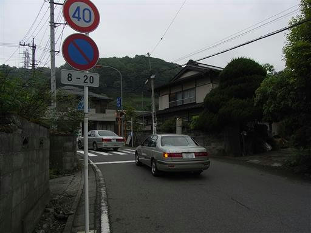
ずいぶん気になる標識が立っている。しかし橋を渡らないと山へは行けない。
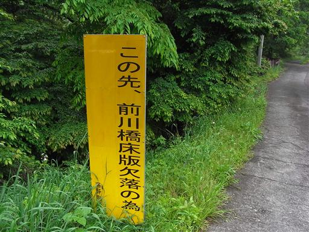
橋の手前まで来る。見た感じ立派な橋なので大丈夫そうだ。
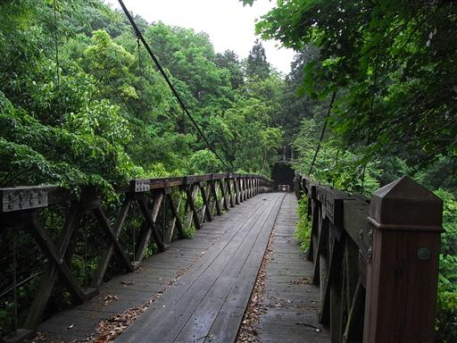
側に案内が書かれていた。端を歩かなければ大丈夫なようだ。
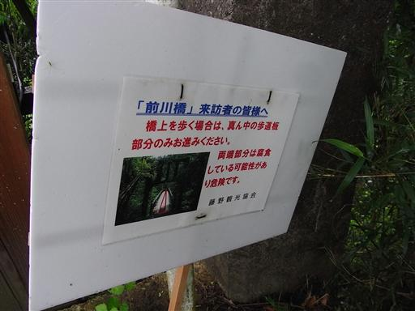
高度は結構ある。板が抜けたら命はないだろう…
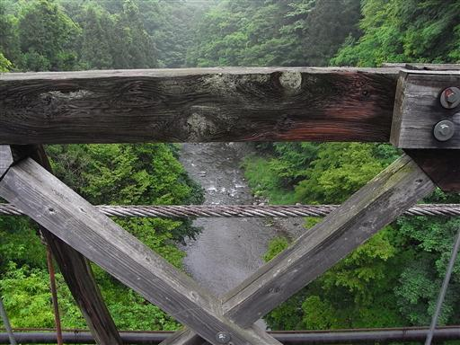
今日の天気は曇。展望は全く期待できない。
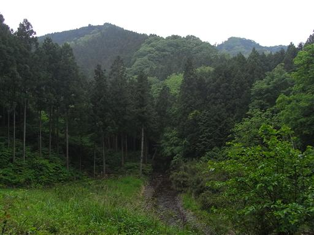
橋を渡ってしばらく歩くと車道が現れる。しばらくは車道歩きが続く。

犬に吠え立てられる。
こちらに向かって来るわけではなく、出来るだけ高いところに登って威嚇している。
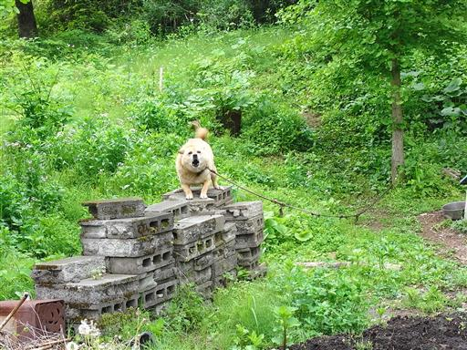
1時間ほど歩いて登山道入口に到着する。
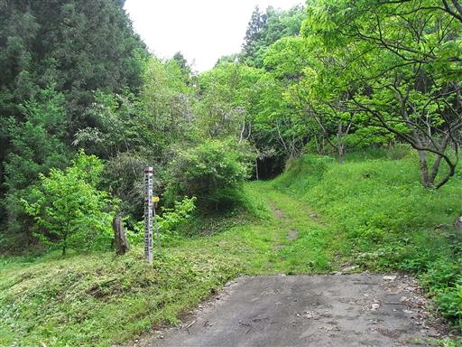
この辺りは昨日歩いたところより標高が高いので、まだ新緑がきれい。
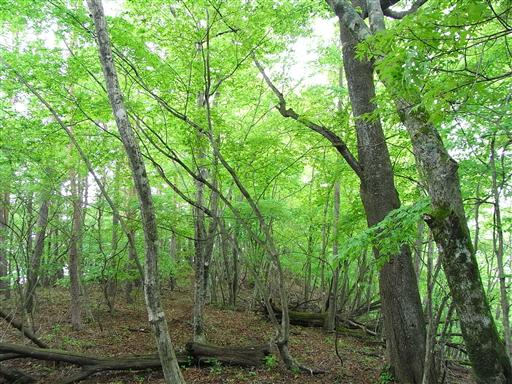
送電線鉄塔の下に来ると展望が開ける。
天気は悪いが思ったより遠くまで見通せる。
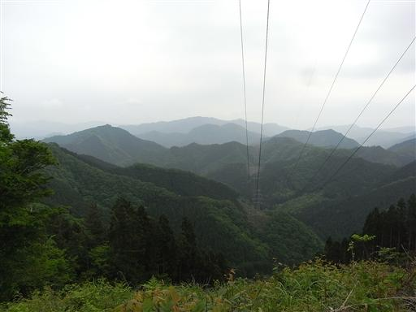
ムギチロ山山頂到着。だらっとした尾根道かと思っていたが意外にアップダウンが激しい。
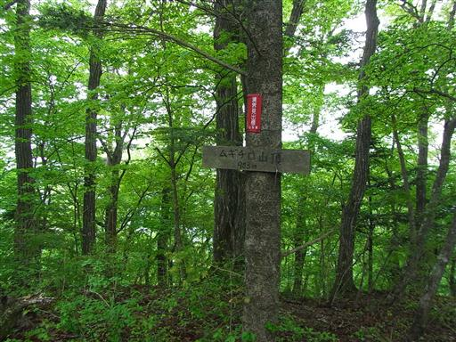
マイナーな山域の割には登山道はきれいに整備されている。
美しい新緑に包まれた景色がどこまでも続く。景色は全く変わらない。
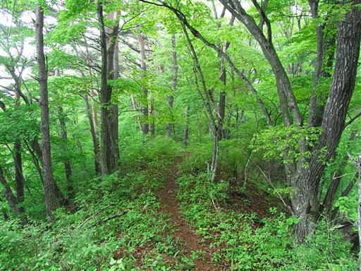
巌道峠に到着。車道が乗っ越している。
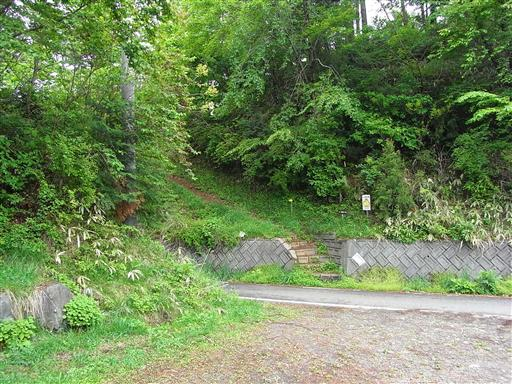
丹沢方面の山並。雲に覆われてほとんど何も見えない。
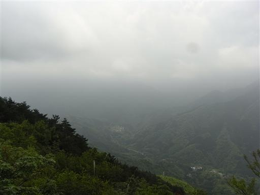
御牧戸山に到着。アンテナが建っている。
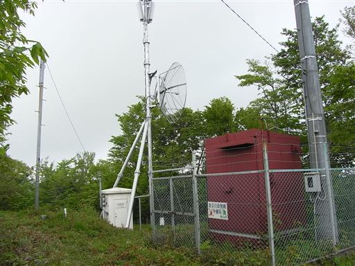
今は新緑が美しい季節で、どこの山も賑わっているはず。
しかし、この登山道では誰一人として出会わない。
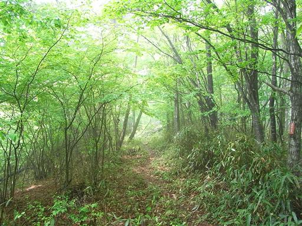
少し樹の種類が変わる。根元で幹が多数に分かれるヒョロッとした樹が多い。
よく見かける樹だが名前が分からない。
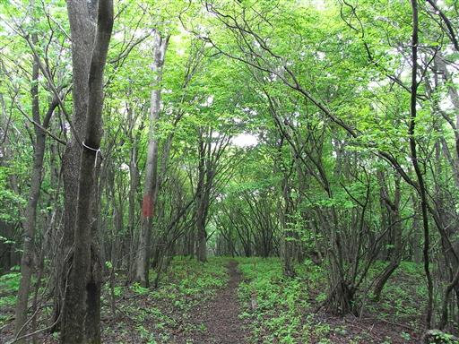
ぐるぐる巻いている木。他の山でも、たまにこういう形の木を見かける。
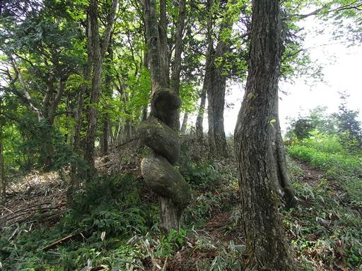
樹間から目指す赤鞍ヶ岳が見えてきた。
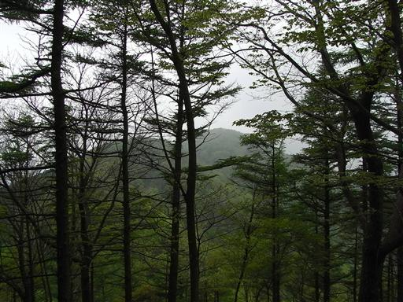
山頂付近はブナ林に覆われている。ブナ林は新緑の美しさに定評がある。
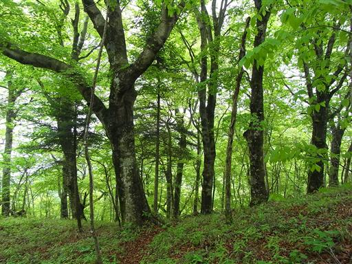
12:19 赤鞍ヶ岳山頂到着。標高1257m。
笹に覆われ、雨量観測所が建つ、何とも冴えない山頂。
ここで、初めて登山者と出会う。本日出会った最初で最後の登山者だった。
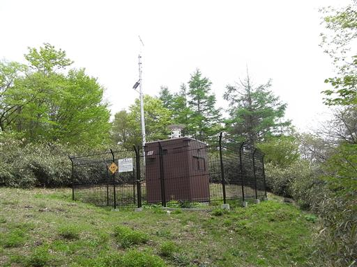
12:57 昼食をとって山頂を出発する。
赤鞍ヶ岳から朝日山へ向かう道は笹に覆われ、一歩を踏み出す気がしない。
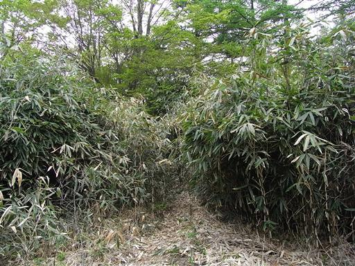
赤鞍ヶ岳までは全く見かけなかったミツバツツジが咲いている。
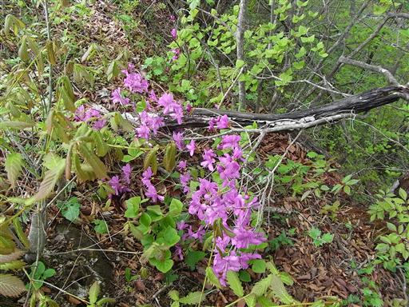
稜線のはるか彼方にひときわ高く朝日山が聳えている。
霞んでいるからか、実際よりずいぶん遠く見える。
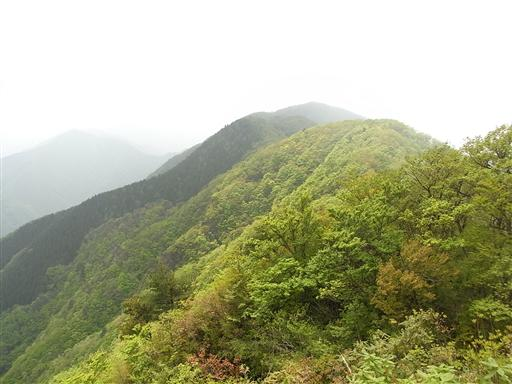
13:38 朝日山山頂到着。標高1299m。
標識には赤鞍ヶ岳と出ているが、ガイドブックによると間違いらしい。
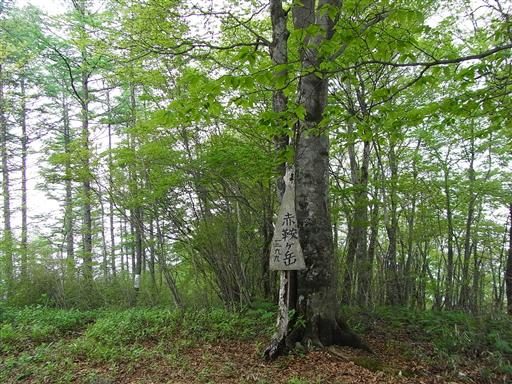
樹林に覆われた静かな山頂。当然展望は無い。
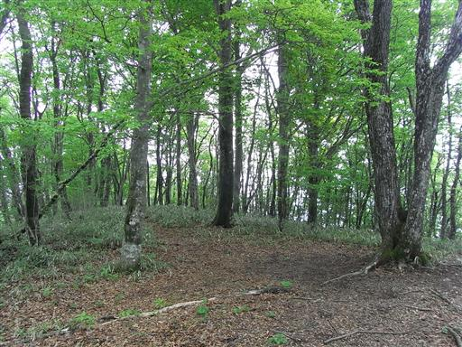
縦走路を外れて、下山道に入る。
崩壊箇所があって結構危ない。
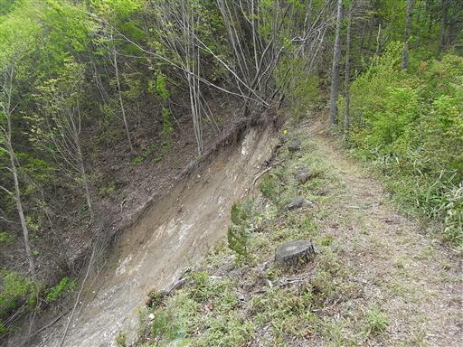
振り返ると、今まで歩いてきた長い尾根が、どこまでも続いているのが見える。

サンショ平に到着。ここで登山道は3つに分かれる。
どの道を行っても下山できるが、一番短い真中の道を選ぶ。
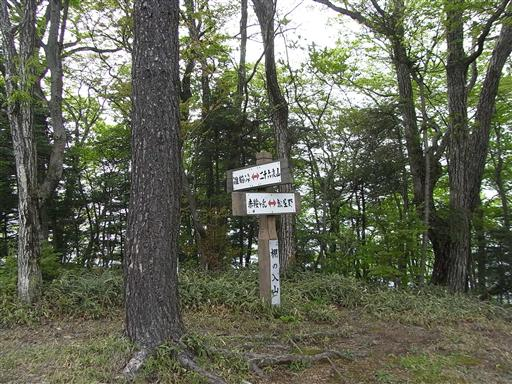
ここの登山道は少々荒れている。草木が両側から覆い被さって道が見えにくい。
これから夏にかけて、道はもっと悪くなるだろう。
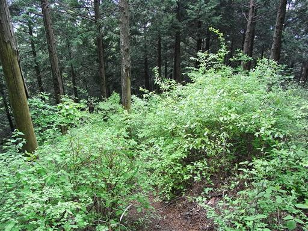
沢まで下りてくる。尾根道が荒れていたのだから、沢道も当然荒れている。
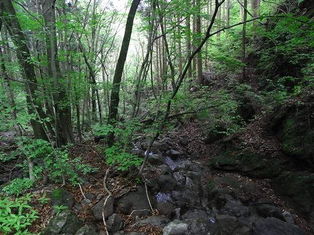
少々分かりにくい登山道を突破し、車道に飛び出す。
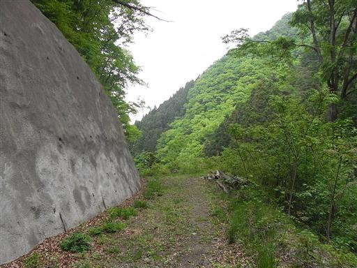
こいのぼりが泳いでいる。今年になって見るのは初めて。
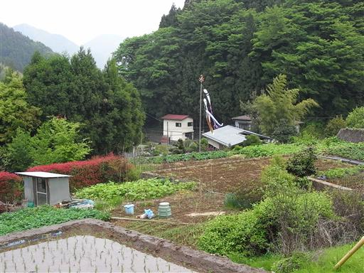
15:21 赤倉岳バス停到着。標高560m。
バスを待っていたら、親切な人に車で奥牧野まで送ってもらえた。
この辺りはバスの本数が極めて少ない。14時の次は17時で、それが最終。
富士急はやたら料金が高いので誰も乗らなくなり、それでバスの本数も減ったとのこと。悪循環だ…
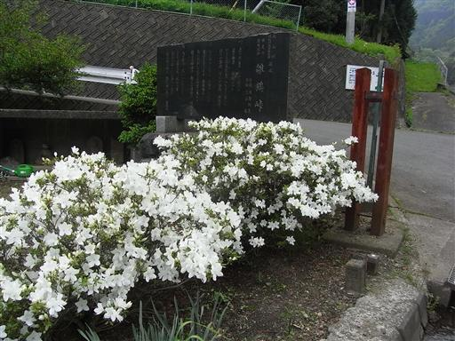